| 日付 | 2021年4月11日（日） |
|---|---|
| 山域 | 安蘇山塊 |
| メンバー | 家族（妻、長女・10歳、長男・7歳） |
| 山行形態 | 子連れ日帰り |
| アクセス | 車 |
| ルート (Map) | 登山口駐車スペース (10:22) - (10:29) 分岐点 - (10:51) 富士山 - (11:09) 男抱山 (11:46) - (12:05) 分岐点 - (12:12) 登山口駐車スペース |
1ヶ月振りの山登り。緊急事態宣言が明けたので久々に遠出できそう。
1年前に登りそこなった立処山のリベンジ登山の予定を立てたが、
出発時になんとエンジントラブルで、車が動かないことが発覚。
2時間後にようやく発進できる状態になったが、
西上州に向かうには難しい時間になってしまった。
急遽別の山を探すことにし、男抱山に目を付ける。
家からは遠いが、アクセスが良く、短い山なので、
遅く出発しても問題なく帰って来れそうだ。
お墓の前の空き地に車を停める。標高190m。
縁石と縁石の幅が小さく、非常に入りにくい駐車スペースだ。
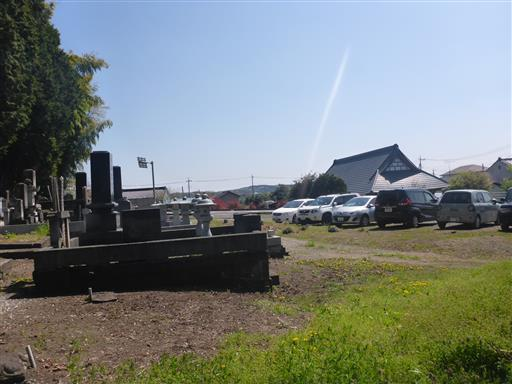
足元にはタンポポがたくさん咲いている。
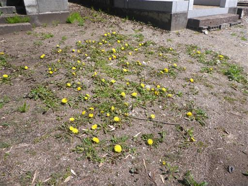
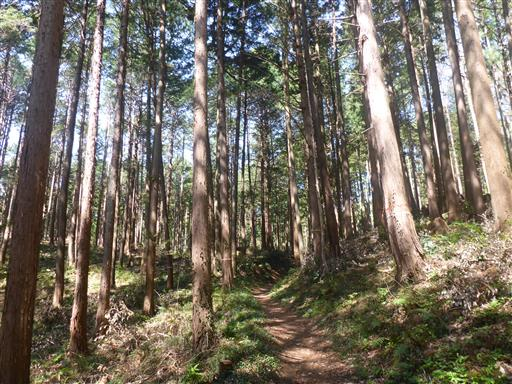
少し歩くとすぐに分岐点に到着する。ここからぐるっと周回コースを歩く予定だ。
右回りコースでまずは富士山から登ることにする。
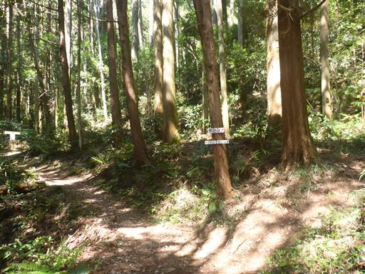
ここから斜面が始まる。周囲は自然林になる。
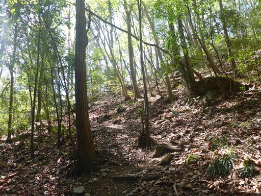
岩場が現れる。
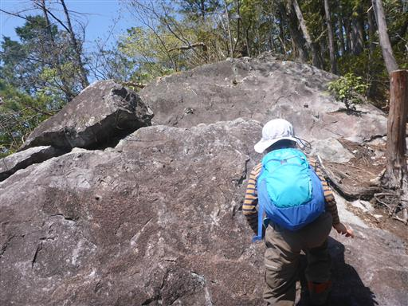
岩の上からは展望が素晴らしい。そして新緑も素晴らしい。
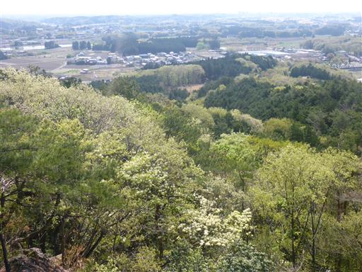
登山道も美しい新緑に包まれている。
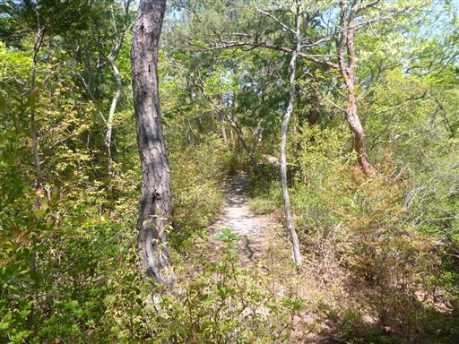
ミツバツツジの花が咲いている。
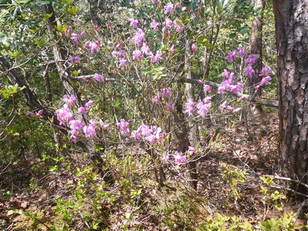
こちらの白い花は何だろう？
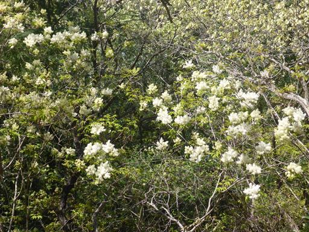
再び岩場。岩の真ん中に穴が開いている。
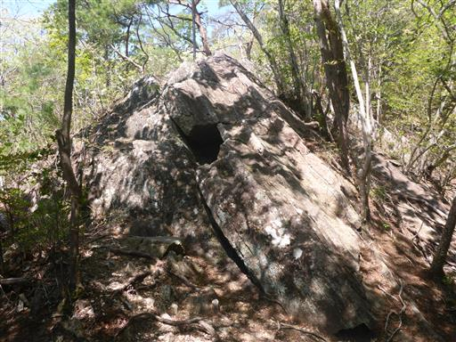
岩尾根を登る。傾斜が緩く難易度は低い。
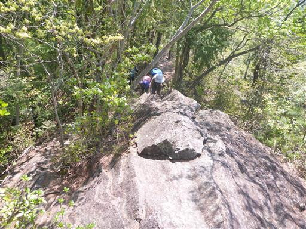
楽しい登山道が続く。
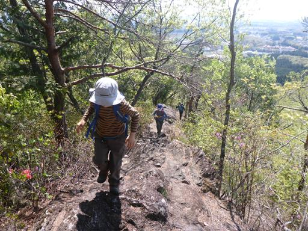
岩が真っ二つに割れている。
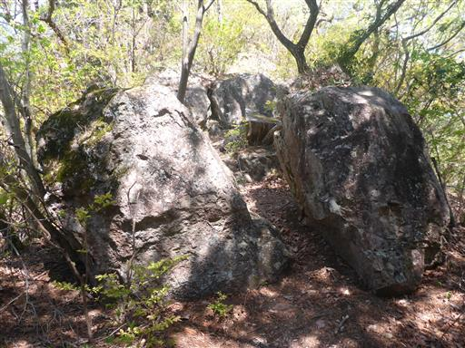
鮮やかなヤマツツジ。
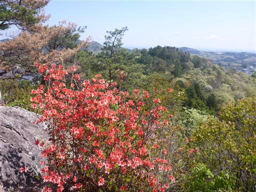
富士山山頂に到着。なぜこの名前なのかは不明。
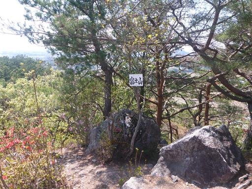
山頂には小さな岩がある。ここが一番標高が高そうだ。
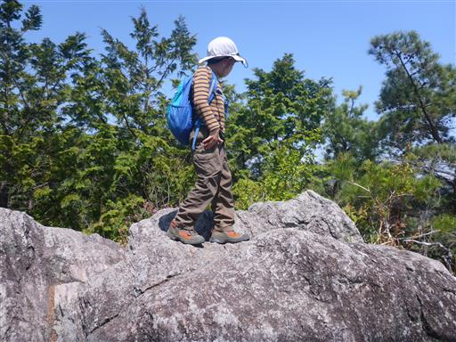
すぐお隣に、目指す男抱山が見える。
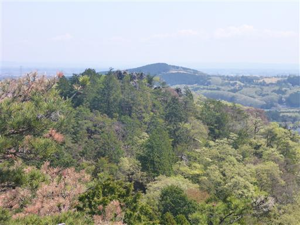
富士山からの下山道は、最初がかなりの急斜面。
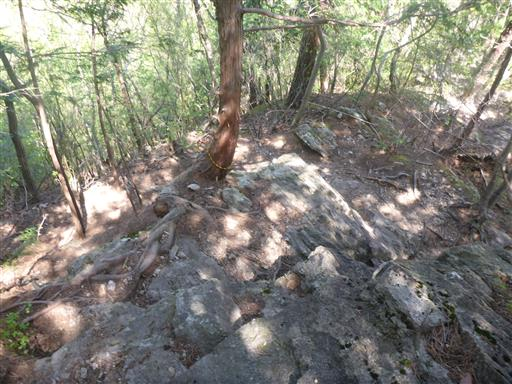
岩場を下る。
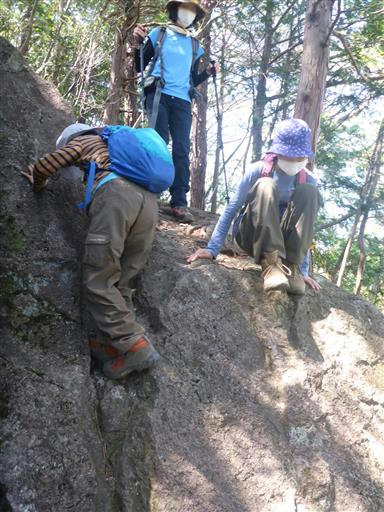
男抱山直下の岩場。登山道は左から巻くルートだが直登してみる。
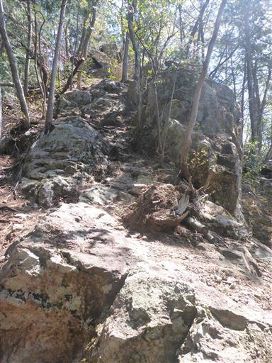
子供達はスルスルと登って行く。
簡単そうに見えるが登山ルートではないため、案外登りにくい。
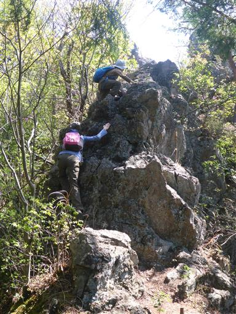
山頂の岩場に到達する。
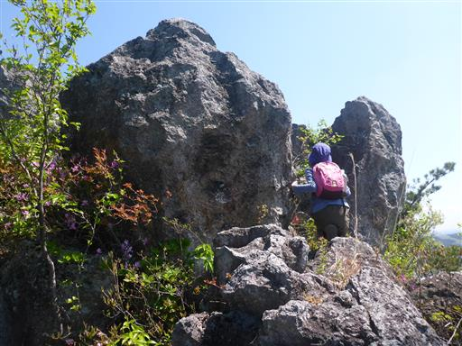
男抱山山頂到着。標高338m。
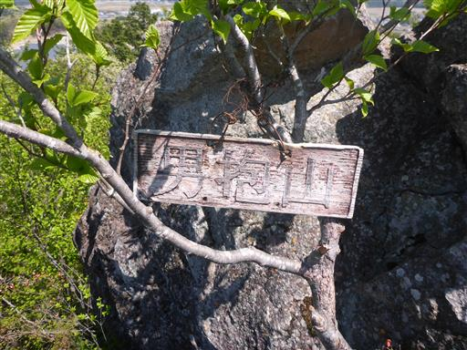
岩でできた山頂は展望抜群。
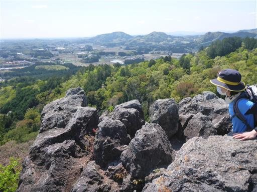
まずは狭い山頂の岩場に腰掛けて昼食タイム。
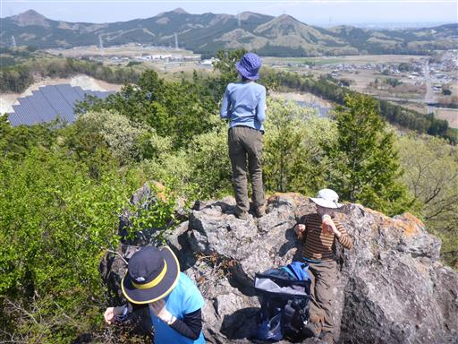
山頂からは特徴的な形状の古賀志山が良く見える。
久々に再訪してみても良いかもしれない。
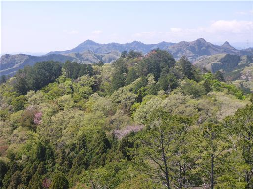
今日は展望が霞んでいるが、遠くの方には高原山が見えている。
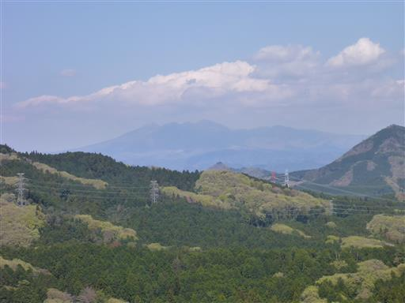
眼下の新緑は非常に美しい。春山はこれがあるから止められない。
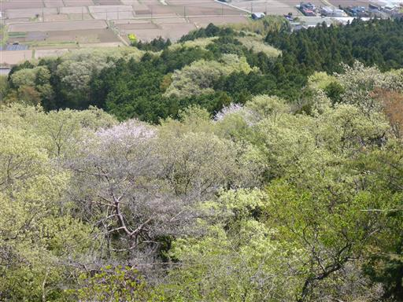
昼食をとったら下山開始。まずは山頂直下の岩場を下る。
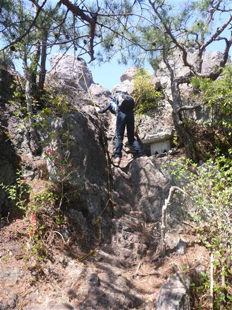
そそり立つ岩峰。
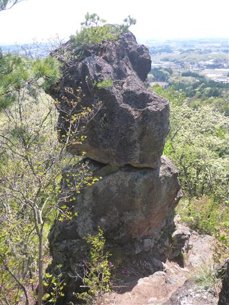
少し下ったところに大き目の祠がある。
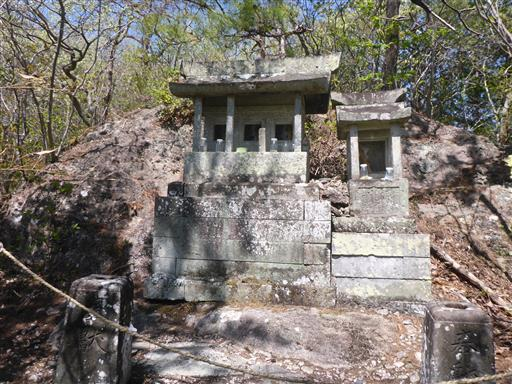
神社跡のような場所に出てくる。歪んだ階段や倒れた灯篭がある。
ここで周回コースの分岐点に合流。あっという間の下山だった。
登山道が短いからこのコースを選んだのだが、思ったよりも短すぎて少々歩き足りなかった。
それでも岩場と新緑、そして山頂からの展望は十分に楽しめた登山だった。
思ったより早く下山できたので、道の駅ろまんちっく村に寄ってから帰宅する。
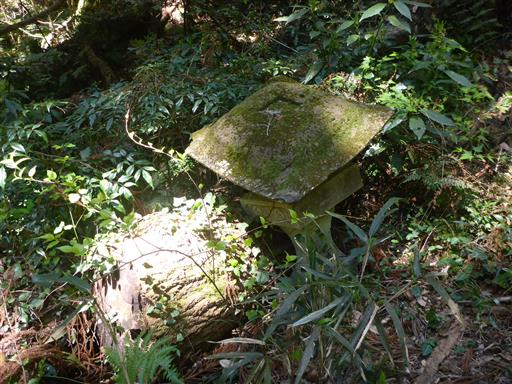